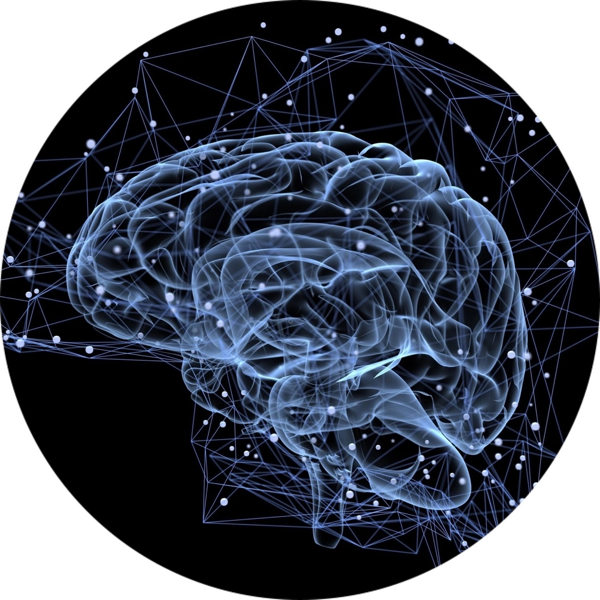

ИИ в медицине – это уникальная технология, которая имеет огромный потенциал для преобразования и улучшения сферы здравоохранения.
Использование ИИ в медицине помогает медицинским профессионалам в принятии важных решений, повышает точность диагностики и оптимизирует лечение пациентов.
Еще одним способом использования ИИ в медицине является прогнозирование результатов лечения. Алгоритмы ИИ могут анализировать данные о пациентах, такие как история болезни, генетическая информация и результаты лечения, для определения наилучшего подхода к лечению конкретного пациента. Это помогает врачам разрабатывать индивидуальные планы лечения и предсказывать результаты с высокой точностью.
Кроме того, ИИ также может быть использован для мониторинга пациентов в реальном времени. С помощью носимых устройств и датчиков ИИ может анализировать данные о пульсе, давлении, уровне глюкозы в крови и других показателях здоровья пациента. Если ИИ обнаруживает какие-либо отклонения от нормы, он может автоматически предупредить медицинский персонал или даже вызвать скорую помощь.
Но наиболее частой областью, где применяется ИИ, является диагностика заболеваний.
Целью нашего проекта является исследование и анализ возможности использования ИИ в качестве вспомогательной платформы при постановке диагнозов, связанных с респираторными инфекциями.
В современной медицине
постановка диагнозов может быть сложной и требовать больших усилий и времени. Использование ИИ может значительно упростить этот процесс.
Предлагаемое
исследование является новаторским, так как оно сфокусировано на применении ИИ в области диагностики респираторных инфекций. Ранее такие исследования были ограничены другими областями медицины или имели более общий характер.
Для достижения поставленной цели мы планируем использовать различные исследования и базы данных (такие как GIDEON, PubMed, ProMED-mail, WHO).
GIDEON (Global Infectious Diseases and Epidemiology Network) - Эта база данных содержит информацию о различных инфекционных заболеваниях, включая респираторные инфекции. Она предлагает медицинскую литературу, эпидемиологические данные, клинические симптомы, лекарства и другую информацию, которая может быть полезной при диагностике и изучении респираторных инфекций.
PubMed - Это крупнейшая база данных медицинских публикаций, где вы можете найти множество исследований, статей и клинических отчетов, связанных с диагностикой и лечением респираторных инфекций. Вы можете использовать ключевые слова, такие как "respiratory infections", "diagnosis", "artificial intelligence" и другие, чтобы найти связанные публикации.
ProMED-mail - Это глобальная электронная система предупреждения и реагирования на инфекционные болезни. Она предоставляет информацию о новых эпидемиях, включая респираторные инфекции, и может быть полезна для понимания текущей ситуации и трендов в области респираторных инфекций.
WHO (World Health Organization) - Веб-сайт ВОЗ предлагает широкий спектр информации о заболеваниях, включая респираторные инфекции. Они предоставляют статистику, руководства, доклады и другие ресурсы, которые могут быть полезными при исследовании и диагностике респираторных инфекций.
Также будет проведён анализ существующих алгоритмов и моделей ИИ, которые могут быть применены в данной области. Наиболее часто используемые в медицине:

1. Классификация и распознавание: Могут быть применены для диагностики различных заболеваний на основе медицинских изображений, таких как рентгеновские снимки, КТ, МРТ и УЗИ. Примеры включают нейронные сети, сверточные нейронные сети (CNN) и методы компьютерного зрения.
2. Прогнозирование и прогностическая аналитика: Алгоритмы машинного обучения могут быть использованы для прогнозирования течения заболевания, вероятности рецидива или риска развития определенных состояний. Это может помочь в принятии решений о лечении и планировании медицинского ухода.
3. Генетический анализ: Методы глубокого обучения и генетического анализа могут быть использованы для анализа геномных данных и выявления генетических мутаций, связанных с заболеваниями.
4. Разработка лекарственных препаратов: Использование методов машинного обучения и моделирования может помочь в разработке новых лекарственных препаратов и оптимизации процесса исследования и разработки.
5. Поддержка принятия решений: ИИ может быть использован для разработки систем поддержки принятия решений, которые помогают врачам в выборе оптимального лечения или диагностики на основе симптомов и медицинских данных пациентов. Некоторые примеры СППР в медицине включают:
5а. Клинические руководства: Это интерактивные программы, которые предоставляют врачам рекомендации по диагностике и лечению на основе клинических протоколов и лучших практик.
5б. Системы помощи в диагностике: СППР может помочь врачам в определении диагноза, предоставляя сравнительный анализ симптомов, медицинских историй и результатов тестов.
5в. Риск-оценка: СППР может оценить риск развития определенных заболеваний или осложнений, основываясь на пациентских характеристиках и медицинских данных.
5г. Планирование лечения: СППР может предоставить рекомендации по выбору оптимального лечения или лекарственных препаратов на основе характеристик пациента, возможных побочных эффектов и эмпирических данных.
5д. Мониторинг и управление: СППР может помочь врачам в мониторинге состояния пациента, предоставляя предупреждения о возможных осложнениях или изменениях в лечении.
Создание платформы по диагностике респираторных заболеваний на основе искусственного интеллекта требует нескольких ключевых компонентов. Вот некоторые из них:
1. Данные о заболеваниях: Нам понадобятся данные о респираторных заболеваниях, включая симптомы, историю болезни, результаты лабораторных исследований и т.д. Эти данные могут быть получены из медицинских баз данных, исследований или от врачей и пациентов.
2. Алгоритмы машинного обучения: Искусственный интеллект будет использовать алгоритмы машинного обучения для анализа и обработки данных. Эти алгоритмы должны быть обучены на основе исторических данных, чтобы определить паттерны и связи между симптомами и диагнозами.
3. Экспертные знания: Помимо данных, платформа должна использовать экспертные знания врачей и специалистов в области респираторных заболеваний. Это может помочь совместить искусственный интеллект с опытом профессионалов и повысить точность диагностики.
4. Интерфейс пользователя: Потребуется разработать удобный интерфейс для взаимодействия с платформой. Это может быть мобильное приложение или веб-приложение, которое позволяет пользователям вводить свои симптомы и получать рекомендации по диагнозу и лечению.
5. Тестирование и валидация: Критически важно провести тестирование и валидацию платформы, чтобы убедиться в ее эффективности и надежности. Совместная работа с медицинскими специалистами и проведение клинических испытаний требуется, чтобы оценить точность диагнозов, предоставляемых платформой.
6. Правовые и этические аспекты: Важно учесть правовые и этические аспекты, связанные с обработкой медицинских данных и предоставлением диагнозов. Потебуется обеспечить соответствие законодательным требованиям и защиту конфиденциальности данных пациентов.
Увеличение точности диагноза: ИИ-системы могут анализировать большие объемы данных, включая медицинские снимки, результаты лабораторных анализов и клинические данные пациентов. Благодаря этому, ИИ может обнаруживать скрытые закономерности и паттерны, которые могут быть незаметны для человека, и тем самым повышать точность диагноза острых респираторных заболеваний.
Более быстрая постановка диагноза: ИИ-системы могут обрабатывать данные с высокой скоростью и предоставлять результаты диагностики в кратчайшие сроки.
Сокращение ошибок диагностики: Использование ИИ может помочь снизить вероятность ошибок диагностики, которые могут возникать из-за человеческого фактора, усталости или субъективных оценок.
Повышение эффективности и оптимизация ресурсов: Благодаря автоматическому анализу данных, ИИ может помочь определить, какие пациенты нуждаются в срочной помощи и более интенсивном лечении, что позволяет эффективно распределить ресурсы и средства.
Улучшение пациентского ухода: Более точная и быстрая диагностика острых респираторных заболеваний, возможная благодаря использованию ИИ, может привести к более раннему началу лечения и более эффективному управлению заболеванием. Это может улучшить пациентский исход и повысить качество ухода.
После окончания данного исследования, возможны
дальнейшие перспективы работы в области ИИ и медицины. Например, можно продолжить исследования и разработку новых моделей и алгоритмов для автоматической диагностики других видов заболеваний.
Однако, ИИ имеет свои минусы и возможные проблемы . Давайте рассмотрим некоторые из них:
1. Недостаток данных: ИИ-системы требуют большого объема данных для обучения и достижения точности в диагностике. В случае острых респираторных заболеваний, особенно при новых или редких видах, может быть недостаток информации для обучения ИИ-моделей. Это может снизить точность диагностики.

2. Ошибки в обучении: Если обучающие данные содержат ошибки или неточности, то ИИ-система может научиться неправильно классифицировать или диагностировать заболевания. Это может привести к неверным рекомендациям или пропуску важных признаков заболевания. Вот
несколько примеров ошибочных диагнозов , которые могут возникнуть при использовании искусственного интеллекта в медицине:
2а. Ложноположительные диагнозы: ИИ-система может ошибочно считать, что пациент страдает от конкретного заболевания, когда на самом деле это не так. Например, ИИ может неправильно классифицировать нормальные варианты анатомии как патологии или ошибочно определить обычные симптомы как признаки болезни.
2б. Ложноотрицательные диагнозы: ИИ-система может пропустить наличие заболевания и неправильно считать, что пациент здоров. Это может произойти, если ИИ не имеет достаточного опыта с редкими или неизвестными заболеваниями, или если обучающие данные были неполными или неточными.
2в. Неправильное приоритетирование: ИИ-система может неправильно определить степень тяжести заболевания или его приоритетность по сравнению с другими состояниями. Например, ИИ может недооценить серьезность острых респираторных заболеваний, что может привести к задержке в лечении и ухудшению состояния пациента.
2г. Недостаток контекста: ИИ-системы часто работают на основе имеющихся данных и не всегда учитывают индивидуальные особенности пациента или контекст его заболевания. Например, ИИ может не учитывать сопутствующие заболевания или лекарственные препараты, которые могут влиять на диагноз.
3. Ограниченность интерпретации: ИИ-системы могут быть ограничены в способности объяснить причину своих диагностических выводов. Это может привести к недоверию со стороны пациентов и врачей, особенно когда требуется объяснение принятых решений.
4. Ответственность и этические вопросы: Использование ИИ в диагностике подразумевает перенос ответственности с врачей на алгоритмы ИИ. В случае ошибок или негативных последствий, возникают вопросы об ответственности и этических аспектах использования ИИ в медицине.
Важно отметить, что использование искуственного интеллекта в лечении острых респираторных заболеваний может иметь большой потенциал для улучшения точности и эффективности диагностики данной группы патологий. Однако, необходимо помнить, что ИИ не может полностью заменить роль врача, а лишь служит инструментом для поддержки и облегчения их работы.